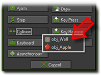
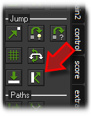
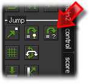
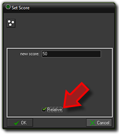
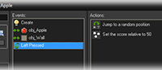

Tutorial
Page 5 of 15
We have now indicated that the apple, when it is created, should move in any of the eight directions with a speed
of 8. Next we must make sure it bounces against the walls. For this we need a collision event.
This happens when two objects collide with each other.
Press the button Add Event and in the form click on Collision. In the menu that appears select the
wall object.

The event is added to the list. Make sure it is selected. Now click the bounce action (the bottom right one) and
drag it into the action list. In the form that appears simply press the OK button.

Our final step is to make sure the player can press the mouse on the apple. In this case we want to
move the apple to a random location (to make it harder for the user to press on it again) and we
want to give the player some score.
Again press the Add Event button and in the form click on Mouse. In the menu select
Left pressed. This event happens when the player presses the left mouse button on the object.
Drag the Jump to Random action to the list. (You can see the name of an action by letting the
mouse hover over the button).

In the form that appears simply press the OK button. This will make the apple jump to a
random location. Next we need to give the player some score. At the right of the form, select the
tabbed page labeled score. A new set of actions appears. Drag the top-left Set Score action to
the action list. In the form indicate a new score of 50. Now we do not want to set the score to 50 but
we want to add 50 to the score. To this end click on the check-box Relative.

This concludes the definition of the apple. The event and action list should now look as follows.

Press OK to close the object form. We now defined our two important objects: the wall and the
apple, which are now both shown in the list at the left. Better save your work.